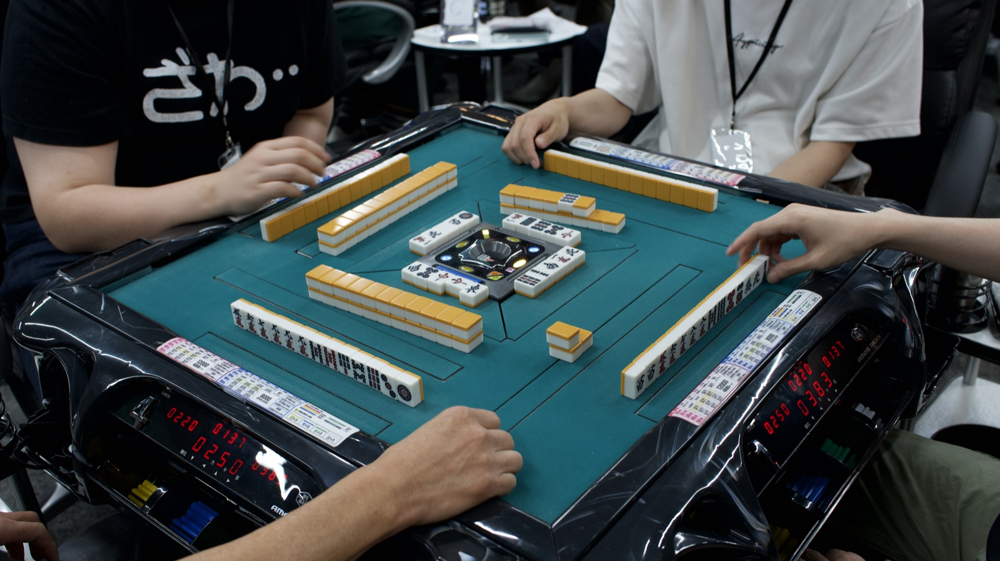
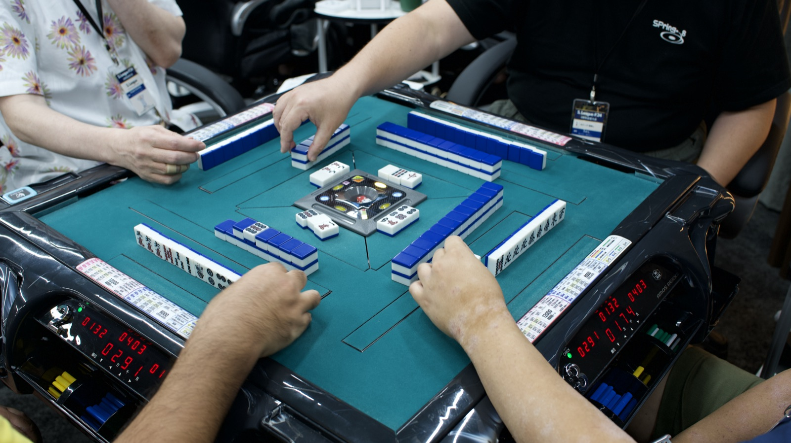
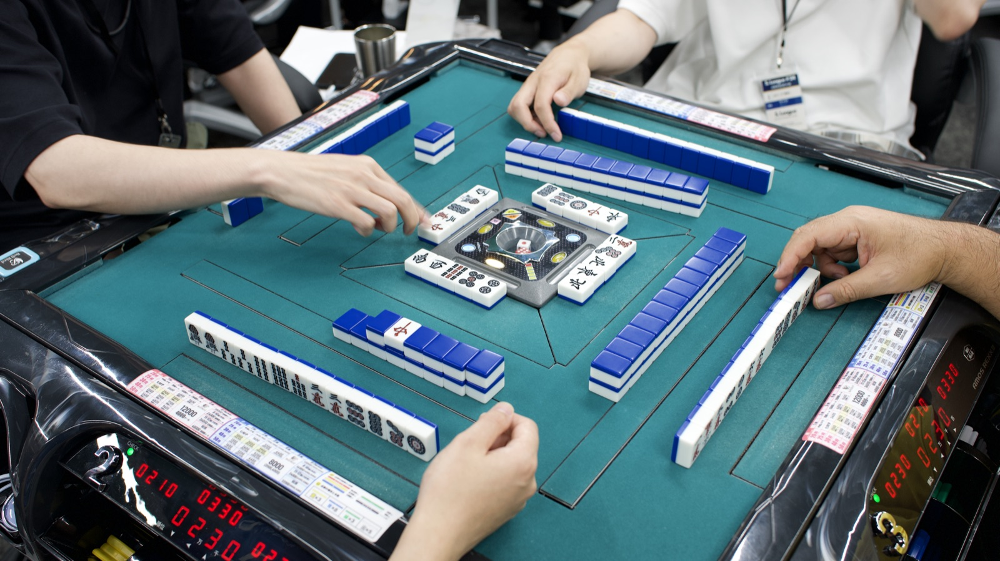
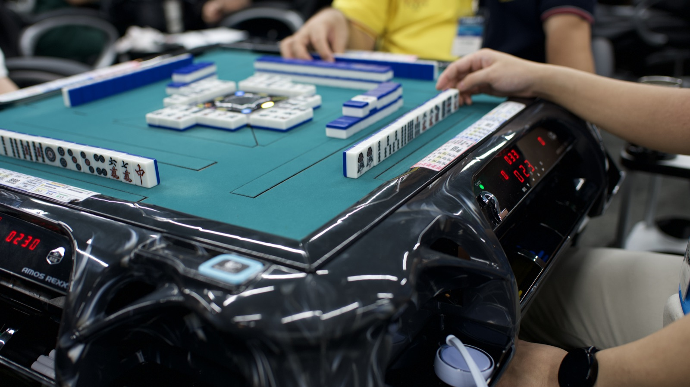
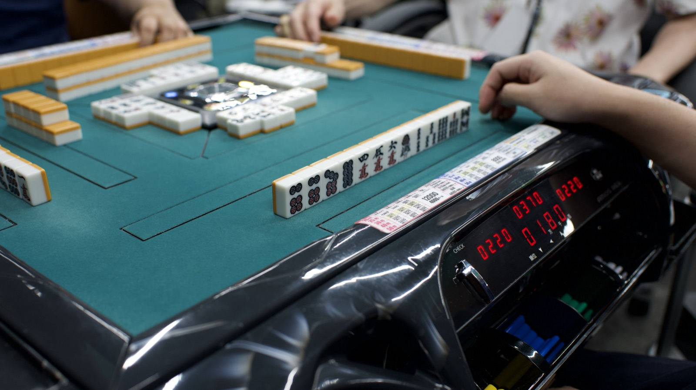
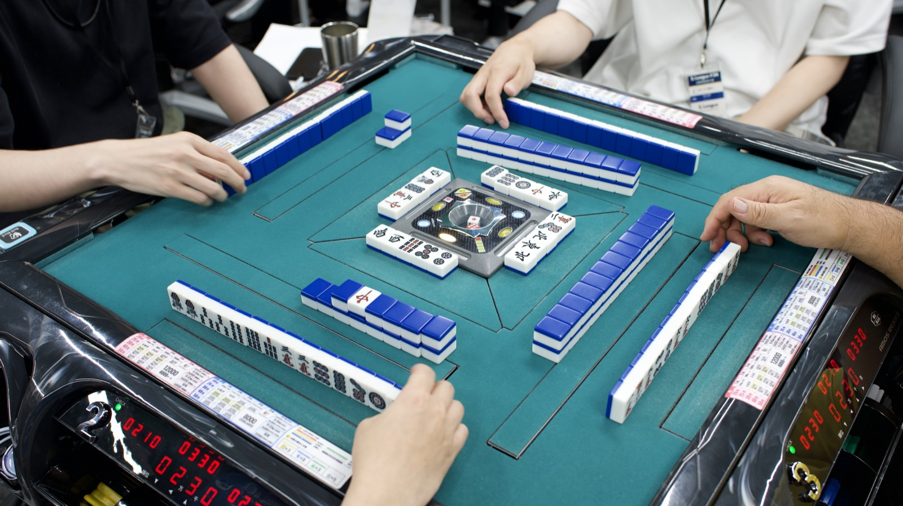

S.League 個人戦
ひとりで戦う、S.League の基本の形式です。毎回16〜20名が集まります。優勝を狙いながらも、卓の空気は和やかです。
初めての方もプロ雀士も、
12:00〜20:00 の1日8時間、個人戦・全7戦 (予選6回戦+順位決定戦1回戦)。
参加費7,300円 (銀行振込は7,000円)・定員24名 (6卓)。申込締切は10月12日 (月) 22:00 です。
S.League は2022年に始めた、本格的な麻雀トーナメントです。
賭けない・飲まない・吸わない。ノーレートの「健康麻雀」です。「より多くの仲間と麻雀を楽しめる機会を創ろう」、そう考えて開いた第1回から、気づけば延べ367名が集まる場になりました。
各プロ団体所属の方から、点数計算に自信がない方まで。東南戦6〜8戦にエキシビションマッチを加えた、約10時間の本格的な大会です。それでも雰囲気は堅苦しくありません。点数計算が苦手でも、周りがフォローするので心配は不要です。「楽しく、真剣に」を合言葉に、初めての方でも入りやすい場にしています。
オーストラリア留学で出会った仲間たちが教えてくれたのは、居場所があることの心強さ。麻雀卓を、その居場所にしたいと考えています。国も年齢も超えて、誰もが気軽に集える場所を目指しています。
卓を囲むのは、麻雀を始めたばかりの方から各プロ団体所属の実力者まで。レベルの垣根を越えて同じ卓につくからこそ、毎回新しい学びと出会いが生まれます。
「賭けない・吸わない・飲まない」を徹底しているから、誰でも安心して卓につけます。それでいて中身は本格的な麻雀。真剣勝負を、健やかに楽しめる場です。


ひとりで戦う、S.League の基本の形式です。毎回16〜20名が集まります。優勝を狙いながらも、卓の空気は和やかです。
1チーム2〜3名で優勝を争います。個人戦とは求められる戦略が変わります。チームメイトとの連携や交流も、この形式ならではの面白さです。
三人麻雀や初心者講習会など、いつもの四人麻雀とは違う特別編です。麻雀の別の楽しみ方を試す回として開いています。
健康麻雀でありながら、それでも真剣勝負。「楽しく、真剣に」をモットーに、1日を通じて本格的な大会体験をお届けします。
東南戦を6〜8戦、それにエキシビションマッチを加えた約10時間。16〜20名が同じ会場で戦い抜く、腰を据えた大会形式です。勝敗にこだわりながらも、参加者全員が気持ちよく打ち終えられる場を目指しています。
S.League にはアマチュアの方もプロも来ます。強い人ばかりが得をしないように、全参加者へ「参加賞」を。地域にちなんだ特別景品を出す回もあります。過去には九州地方の名産品 (博多ぽてと・博多通りもん・久留米ラーメン) などを並べ、好評でした。
優勝した方のお名前は、S.League の公式記録にずっと残ります。
入賞景品をご用意しています。
参加した全員にプレゼントをお渡しします。回によっては地域の名産品などの特別景品も加わります。
直近の S.League 24 (2026年7月25日開催) より、真剣勝負の卓の様子をお届けします。






草の根の健康麻雀コミュニティが、競技麻雀のトップシーンを支える側にまわりました。
率いるのは、RMU の河野高志プロ。
2026年8月、S.League はプロ競技麻雀団体 RMU が主催する RTB2026 に出場する「チーム 大奥」のチームスポンサーに就任しました。チームを率いるのは、RMUクラウン・令昭位のタイトルを持つ河野高志プロです。
S.League がこれまで大切にしてきたのは、初心者もベテランも同じ卓を囲める場をつくることでした。その延長線上に、競技麻雀の一線で戦う選手を支えるという役割が加わります。強くなりたい人が本気で打てる場所を、アマチュアからプロまで地続きにしていく ―― それが S.League の次の一歩です。
S.League を主催している本人が、LUMA Frame の名前で写真を撮っています。大会当日の記念撮影も承ります。
チームでの一枚も
S.League は LUMA のコミュニティ事業として2022年に始まりました。麻雀という共通言語があれば、初対面同士でも同じ卓を囲めます。その出会いの場を、これからも続けていきます。